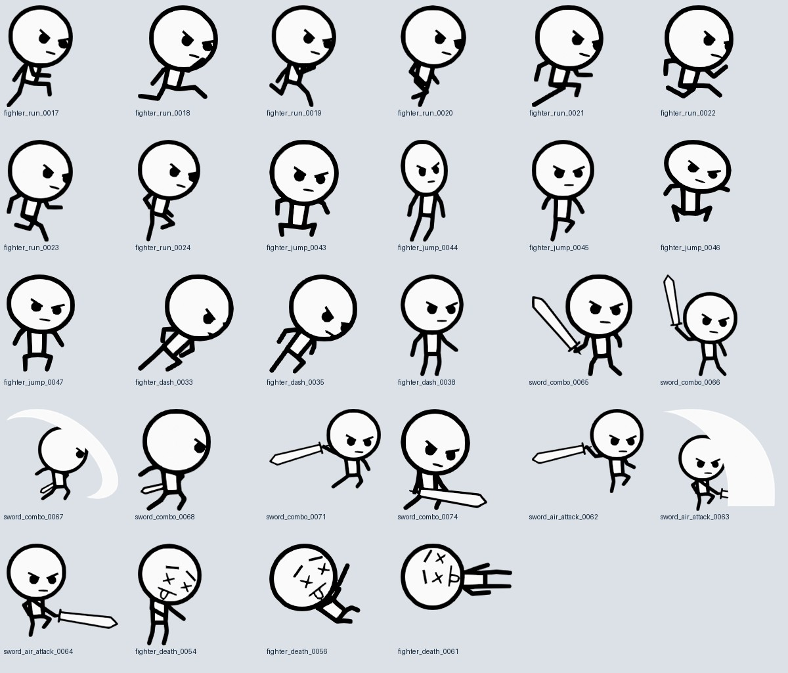

← Back to pose editorFast neon stick actions
41 editable clips: 17 movement actions, 12 normal weapon attacks and 12 powered attacks. In the editor, choose Polished · 41 clips and click Load action pack. Loading asks first, backs up your current project and supports Undo.
Reference artwork by Raphael Gonçalves / RGS_Dev, used under CC0. The motion was interpreted from these frame silhouettes and retargeted to the neon rig’s longer limbs. Game-specific actions and weapon variants are original or derived choreography, identified below.
Original animation pack · Author page · Included CC0 license · Download editable project
Inspected source poses

What changed
Sword attacks use a broad cutting arc. Hammer attacks load more deeply and hold the impact before recovering. Baton attacks use short anticipation and quick recoil. Powered variants enlarge the whole weapon by 3× and add a wider cyan trail. The existing attack durations are preserved. Foreshortening stays separate from weapon size.
Use key ghosts to judge arcs, slow playback to inspect transitions, and Jump to contact pose to edit the striking silhouette. Retiming scales keys and effect cues together. Clip notes and the table below identify the source frames.
Runtime status: this is an editable animation library. Loading or exporting it does not automatically replace Godot’s current procedural animations. World foot planting, ledge contacts and gameplay movement remain runtime responsibilities.
Download provenance data
Source hash and per-clip frame references